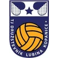
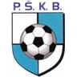

, výkop 10:30
DomáciHostia
 MFK Vrbové U11 B
MFK Vrbové U11 Bbez výsledku
 MFK Stará Turá
MFK Stará TuráNávrh webu, nie oficiálna stránka klubu
III. liga U11 ObFZ Trenčín, 8. miesto z 12
, výkop 10:30
MFK Vrbové U11 BMFK Stará Turá1–4–1výhry, remízy a prehry, skóre 19:12

TJ Družstevník Lubina - kopanice doma, 14. kolo 10:30
PŠK Bzince pod Javorinou doma, 18. kolo 10:30III. liga U11 ObFZ Trenčín
| # | Tím | Z | V | R | P | Skóre | B |
|---|---|---|---|---|---|---|---|
| 1. | PŠK Bzince pod Javorinou | 8 | 3 | 5 | 0 | 25:7 | 14 |
| 2. | 9 | 1 | 8 | 0 | 10:2 | 11 | |
| 3. | 9 | 1 | 8 | 0 | 6:5 | 11 | |
| 4. | 8 | 3 | 2 | 3 | 28:43 | 11 | |
| 5. | 10 | 0 | 9 | 1 | 4:7 | 9 | |
| 6. | TJ Družstevník Lubina - kopanice | 8 | 0 | 8 | 0 | 0:0 | 8 |
| 7. | 10 | 0 | 8 | 2 | 6:15 | 8 | |
| 8. | 6 | 1 | 4 | 1 | 19:12 | 7 | |
| 9. | 6 | 0 | 6 | 0 | 0:0 | 6 | |
| 10. | OŠK Hôrka nad Váhom | 7 | 0 | 6 | 1 | 2:8 | 6 |
| 11. | 4 | 0 | 4 | 0 | 0:0 | 4 | |
| 12. | 5 | 0 | 4 | 1 | 3:4 | 4 |
Hráči, ktorí v kalendárnom roku 2026 nastúpili alebo boli v nominácii na zápas (podľa Sportnetu). Pri mládeži uvádzame len mená.